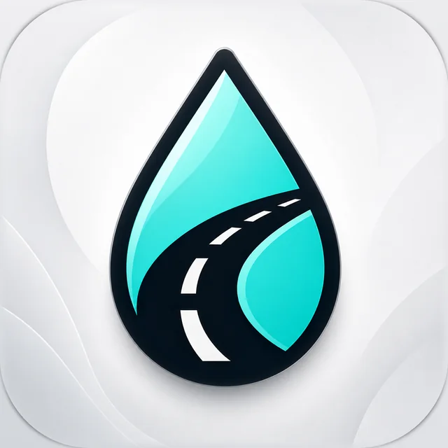
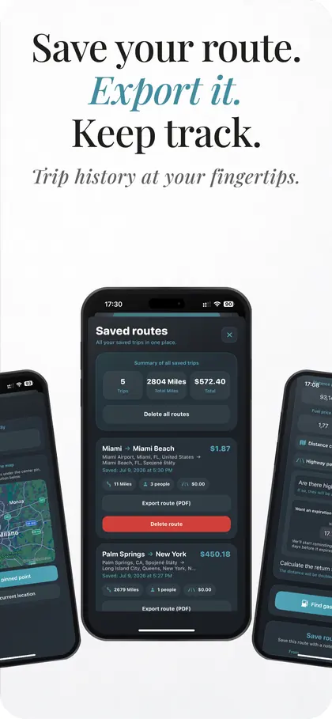

Výpočet nákladov na cestu bez tabuľky
Zadaj vzdialenosť, spotrebu v l/100 km, cenu paliva a poplatky na trase. Tankio zobrazí jasný súčet nákladov na jazdu autom.

Tankio Česky →iOS aplikácia na cesty autom
Tankio je kalkulačka nákladov na jazdu pre iPhone. Vypočíta cenu cesty podľa kilometrov, spotreby auta, ceny paliva a diaľničných či mýtnych poplatkov.
Jazdu si uložíš, môžeš rozdeliť medzi cestujúcich a vyexportovať do PDF.
Stiahnuť z App Store
Zadaj vzdialenosť, spotrebu v l/100 km, cenu paliva a poplatky na trase. Tankio zobrazí jasný súčet nákladov na jazdu autom.
Uložené trasy a história jázd, rozdelenie celkovej sumy medzi cestujúcich, blízke čerpacie stanice, pripomienky na diaľničnú známku, prepočet podporovaných mien a PDF súhrny jázd.
Vie Tankio vypočítať cenu jazdy?
Áno — podľa kilometrov, spotreby, ceny paliva a diaľničných alebo mýtnych poplatkov.
Je Tankio pre iPhone?
Áno, pre iPhone s iOS 16.4 alebo novším.
Sú PDF exporty účtovné doklady?
Nie. Slúžia na osobný prehľad a evidenciu jazdy.